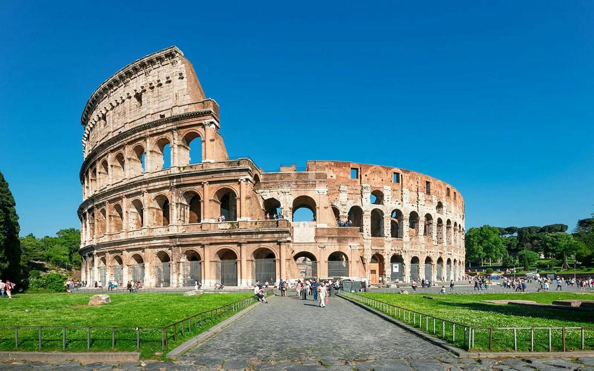
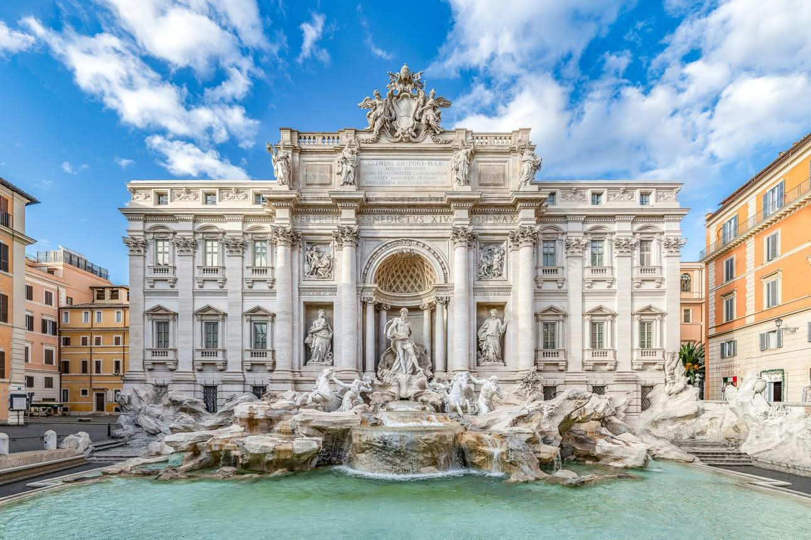
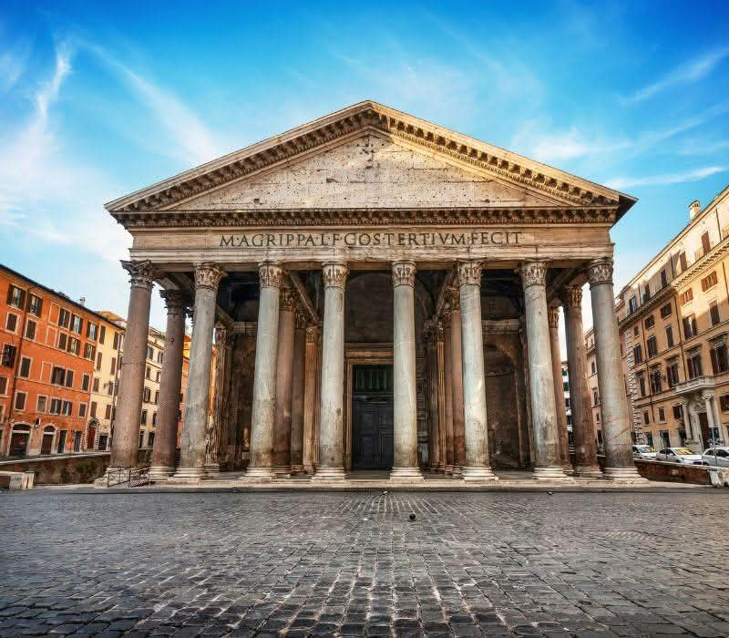

Roma
Conocida como la Ciudad Eterna, Roma es un museo al aire libre repleto de historia, arte y gastronomía increíble. Caminar por sus calles es descubrir milenios de civilización, desde ruinas romanas imperiales hasta fuentes barrocas y plazas llenas de vida.

El Coliseo Romano es el anfiteatro más grande construido durante el Imperio romano y uno de los monumentos más emblemáticos del mundo. Inaugurado en el año 80 d. C., albergaba luchas de gladiadores, espectáculos públicos y eventos masivos en el corazón de Roma.

La Fontana di Trevi es una de las fuentes más famosas del mundo, conocida por su impresionante diseño barroco y la tradición de lanzar monedas para asegurar un regreso a Roma.

El Panteón de Agripa es un templo romano dedicado a todos los dioses, famoso por su cúpula monumental y su impresionante arquitectura que ha influido en numerosos edificios a lo largo de la historia.